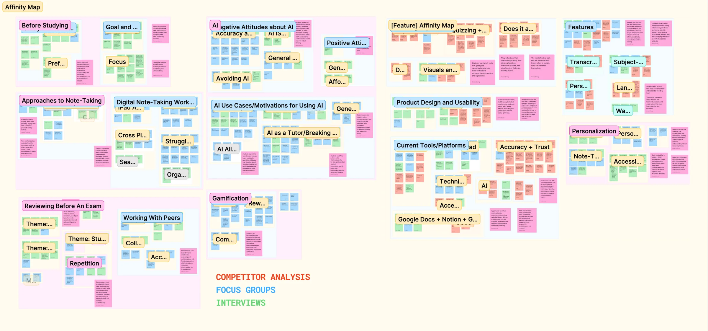

Notability × Berkeley Innovation
Designing a guided AI study session for Notability.
Notability asked us to make its AI study tool, Learn, more gamified. Research said students didn’t want a game. They wanted a starting point, so we designed Study Session.
My role
I turned research into the direction.
I worked across our surveys, interviews, focus groups, and diary studies, then synthesized them into affinity maps, feature maps, and personas. From there, I revised our how-might-we away from gamification and rebuilt our hi-fi as the clickable prototype on this page.
The brief
Learn could do almost everything. So could every other AI study tool.
Learn already summarized notes, quizzed students, and answered questions in chat. But nothing tied those tools into a study routine, and every one started from a blank prompt.
Notability asked us for two things: a more inclusive study experience for students with learning differences, and a version of Learn that felt more gamified, personalized, and engaging.
Research
Students wanted motivation, but rejected almost every way of providing it.
- Survey responses
- 85
- Interviews
- 15
- Focus groups
- 5
- Diary studies
- 5
“I don’t want points. I want to know I’m actually getting better.”
Student participant
Four themes kept coming up.
Streaks and badges didn’t matter. Progress in a tool that felt personal did.
Lectures move fast, so students wanted to stay present and organize later.
When AI made mistakes, students stopped using it.
Complicated tools broke focus. Clarity beat novelty.

The reframe
The brief asked for a game. Research asked for a starting point.
Streaks created pressure. Badges felt childish. Points rewarded activity instead of understanding, and automatic answers made students doubt they were learning. Adding game mechanics would have solved the wrong problem, so we changed the question.
How do we make studying more engaging?
How can we help students find where to begin?
Strategy
Win on the student, not the feature.
Tools like NotebookLM already adapt to your content, and flashcards, quizzes, and summaries are table stakes. But none we reviewed learned how someone studies, or let them turn the AI down. That gap became three bets.
Learn their style, struggles, and goals.
Start plans from notes students already own.
Make the AI transparent, and easy to turn down.
Key decisions
Four decisions that shaped Study Session.
Personalize first, but keep it optional and private.
A one-minute survey tailors everything after it. The struggles question is optional, private, and hideable, because disclosure should never be the price of personalization.
Let students turn the AI down.
Students write goals in their own words. Learn can turn them into specific tasks, or leave them as written. No competitor we reviewed let students use less AI.
The student writes
They choose how much help
Learn turns it into
Replace streaks with evidence of progress.
Our early profile had a day streak. Research said streaks created pressure, so we replaced it with concepts reviewed and before-and-after scores.
Celebrate completion, not activity.
One brief moment marks a natural stopping point: time studied, topics read, and goals completed. Nothing can be farmed, and nothing asks you to come back tomorrow.
The solution
Study Session gives studying a beginning, middle, and end.
Three questions shape every screen after.
AI suggests chapters from past sessions; the outline comes from the note itself.
Type goals, enhance them with AI, or keep your own list.
Knowing when you’ll stop makes it easier to start.
Check off goals beside your notes, then see what changed.
Impact
We changed the client’s question.
Our work moved Notability from gamifying Learn toward supporting growth with evidence of progress. We delivered a hi-fi prototype of Study Session and Profile Personalization, plus three written concepts.
Two of our concepts later appeared in Notability’s app. In April 2026, Notability launched a Study Timer on iOS, the direction we explored.
Reflection
Treat the brief as a hypothesis.
Students didn’t need more engagement. They needed less friction getting started. If we had built what the brief first asked for, we would have answered the wrong question well.
What I learned
- Listen for the no. Students wanted motivation but rejected almost every way of providing it. The rejections told us more than the requests did.
- Make less AI an option. No competitor we reviewed let students use less AI. Letting them turn it down became the trust feature.
- Show evidence, not effort. Progress was what students asked for, so we measured understanding instead of activity.
What I got wrong first
Our early profile had a day streak. It looked like engagement on paper, but research said streaks created pressure, so it became concepts reviewed and before-and-after scores.